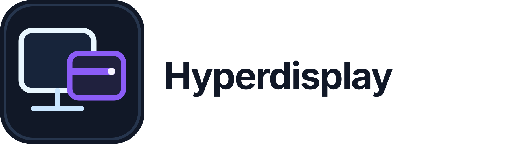

USB 直连优先
Type‑C 数据线 + USB 调试。没有路由器也能连接，边用边充电。
适合：办公桌、演示、高帧率操作
立即体验MAC + ANDROID
插上 Type‑C 线，即刻扩展 Mac。
拔线后自动回到 Wi‑Fi，下一次打开仍是你的原来布局。
v0.3.3 · macOS 13+ · Android 平板

第一次，只需三步
Mac 安装 Hyperdisplay；平板扫码或下载 APK。
Mac 允许屏幕录制。要走 USB 直连时，在平板开启 USB 调试并授权这台 Mac。
插线自动优先走 USB；没插线时打开平板 App，自动连接局域网里的 Mac。
一套体验，两条路由
Type‑C 数据线 + USB 调试。没有路由器也能连接，边用边充电。
适合：办公桌、演示、高帧率操作同一局域网内打开平板 App 即可连回；拔掉线不会打断你的工作。
适合：沙发、会议室、移动使用ONE TABLET · MULTIPLE DISPLAYS
不是把同一张画面硬切开。Hyperdisplay 会为平板里的每个区域创建独立的虚拟外接显示器：Mac 上的窗口可以分别拖进去、分别排列，重新连接后还会认回原来的布局。
左右两块独立显示器：在 Mac 的“显示器排列”里，它们也是两块可单独摆放的外接屏。

不是投屏，是外接屏
Hyperdisplay 创建真正的虚拟外接显示器。平板重新连接时，会沿用稳定的显示器身份、原先的排列位置和窗口归属。
现在开始
开源发布在 GitHub。Mac 安装包已经 Apple 公证；Android APK 使用正式签名。